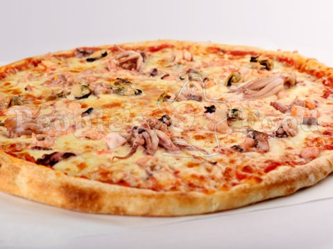

Пицца «Дары Моря» с морепродуктами от "Санта Бремор"
Тесто положить в муку и раскатать руками до круглой формы диаметром 25 см. Диск отряхнуть от муки и положить на сухую поверхность.
В центр выложить соус «Мафия» и крем из артишоков и равномерно распределить по всей поверхности теста.
Посыпать сыром моцарелла по всей поверхности.
Затем выложить ингредиенты: креветки, мидии, маслины, томаты сушеные.
Выпекать в печи до полной готовности.
После выпекания добавить семгу копченую от "Санта Бремор" соломкой и нанести соус песто по всей поверхности.
Отдельно подается соус острый для пиццы.